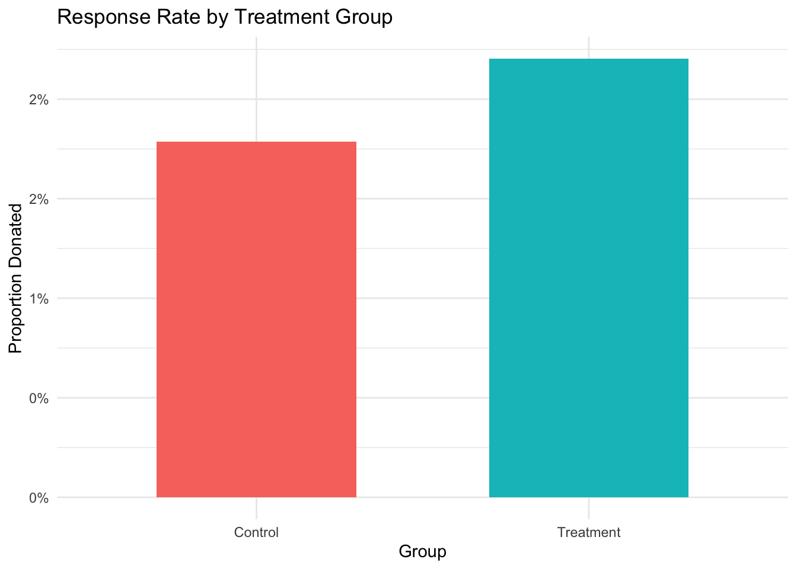
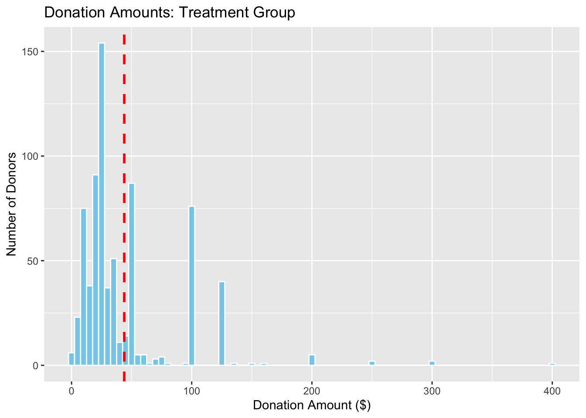
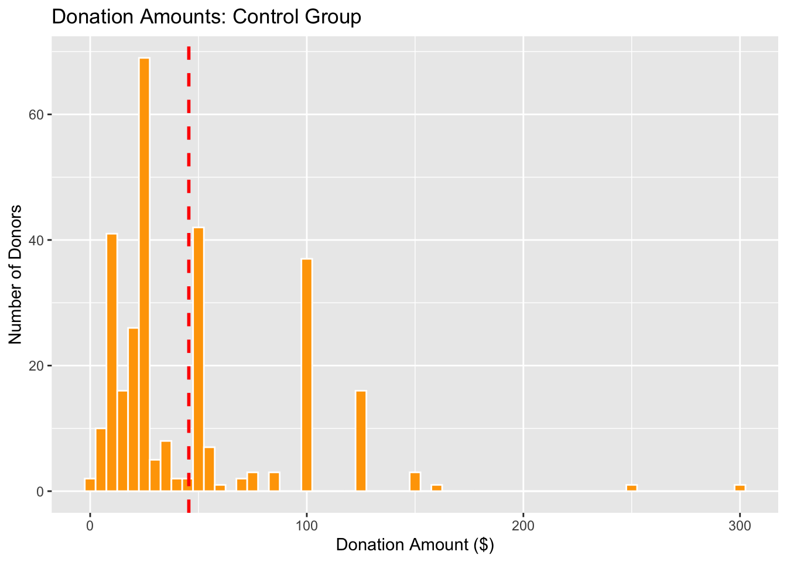
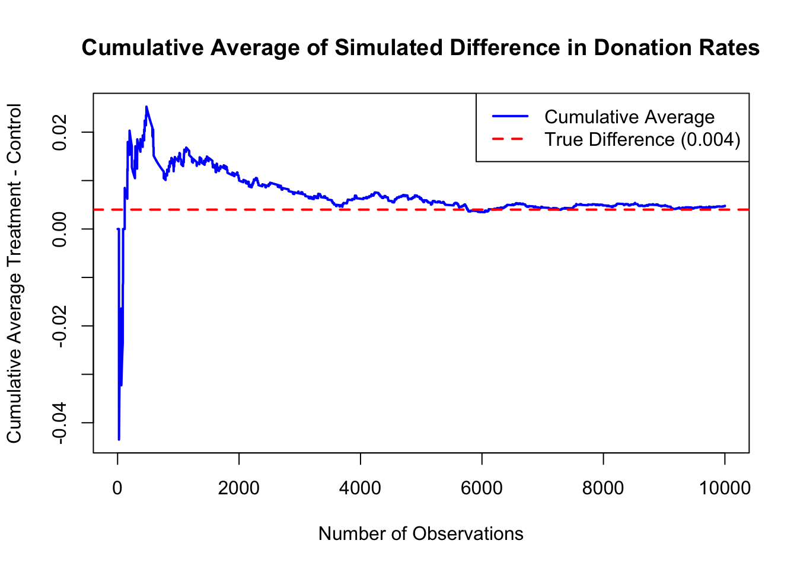
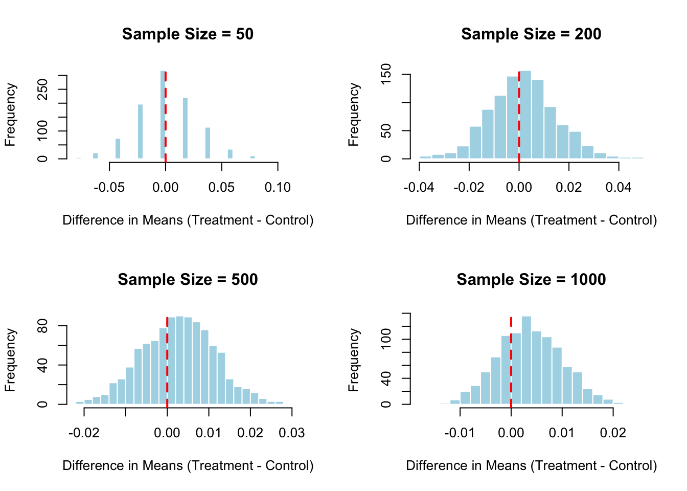

library(haven)
library(dplyr)
Attaching package: 'dplyr'The following objects are masked from 'package:stats':
filter, lagThe following objects are masked from 'package:base':
intersect, setdiff, setequal, unionlibrary(ggplot2)Shuyin Zheng
May 2, 2025
Dean Karlan at Yale and John List at the University of Chicago conducted a field experiment to test the effectiveness of different fundraising letters. They sent out 50,000 fundraising letters to potential donors, randomly assigning each letter to one of three treatments: a standard letter, a matching grant letter, or a challenge grant letter. They published the results of this experiment in the American Economic Review in 2007. The article and supporting data are available from the AEA website and from Innovations for Poverty Action as part of Harvard’s Dataverse.
The study found that mentioning a matching grant increased both the probability of donation and the amount given, but increasing the match ratio beyond $1:1 did not further increase giving. These results suggest that the presence of a match signal matters more than its magnitude. Interestingly, the effect was stronger in politically conservative (“red”) states, suggesting that local context may influence the impact of fundraising appeals.
This project seeks to replicate their results.
Attaching package: 'dplyr'The following objects are masked from 'package:stats':
filter, lagThe following objects are masked from 'package:base':
intersect, setdiff, setequal, union# A tibble: 50,083 × 51
treatment control ratio ratio2 ratio3 size size25 size50 size100 sizeno
<dbl> <dbl> <dbl+lb> <dbl> <dbl> <dbl+l> <dbl> <dbl> <dbl> <dbl>
1 0 1 0 [Cont… 0 0 0 [Con… 0 0 0 0
2 0 1 0 [Cont… 0 0 0 [Con… 0 0 0 0
3 1 0 1 0 0 3 [$10… 0 0 1 0
4 1 0 1 0 0 4 [Uns… 0 0 0 1
5 1 0 1 0 0 2 [$50… 0 1 0 0
6 0 1 0 [Cont… 0 0 0 [Con… 0 0 0 0
7 1 0 1 0 0 1 [$25… 1 0 0 0
8 1 0 2 1 0 3 [$10… 0 0 1 0
9 1 0 2 1 0 4 [Uns… 0 0 0 1
10 1 0 1 0 0 1 [$25… 1 0 0 0
# ℹ 50,073 more rows
# ℹ 41 more variables: ask <dbl+lbl>, askd1 <dbl>, askd2 <dbl>, askd3 <dbl>,
# ask1 <dbl>, ask2 <dbl>, ask3 <dbl>, amount <dbl>, gave <dbl>,
# amountchange <dbl>, hpa <dbl>, ltmedmra <dbl>, freq <dbl>, years <dbl>,
# year5 <dbl>, mrm2 <dbl>, dormant <dbl>, female <dbl>, couple <dbl>,
# state50one <dbl>, nonlit <dbl>, cases <dbl>, statecnt <dbl>,
# stateresponse <dbl>, stateresponset <dbl>, stateresponsec <dbl>, … treatment control ratio ratio2
Min. :0.0000 Min. :0.0000 Min. :0.000 Min. :0.0000
1st Qu.:0.0000 1st Qu.:0.0000 1st Qu.:0.000 1st Qu.:0.0000
Median :1.0000 Median :0.0000 Median :1.000 Median :0.0000
Mean :0.6668 Mean :0.3332 Mean :1.334 Mean :0.2223
3rd Qu.:1.0000 3rd Qu.:1.0000 3rd Qu.:2.000 3rd Qu.:0.0000
Max. :1.0000 Max. :1.0000 Max. :3.000 Max. :1.0000
ratio3 size size25 size50
Min. :0.0000 Min. :0.000 Min. :0.0000 Min. :0.0000
1st Qu.:0.0000 1st Qu.:0.000 1st Qu.:0.0000 1st Qu.:0.0000
Median :0.0000 Median :2.000 Median :0.0000 Median :0.0000
Mean :0.2222 Mean :1.667 Mean :0.1667 Mean :0.1666
3rd Qu.:0.0000 3rd Qu.:3.000 3rd Qu.:0.0000 3rd Qu.:0.0000
Max. :1.0000 Max. :4.000 Max. :1.0000 Max. :1.0000
size100 sizeno ask askd1
Min. :0.0000 Min. :0.0000 Min. :0.000 Min. :0.0000
1st Qu.:0.0000 1st Qu.:0.0000 1st Qu.:0.000 1st Qu.:0.0000
Median :0.0000 Median :0.0000 Median :1.000 Median :0.0000
Mean :0.1667 Mean :0.1667 Mean :1.334 Mean :0.2223
3rd Qu.:0.0000 3rd Qu.:0.0000 3rd Qu.:2.000 3rd Qu.:0.0000
Max. :1.0000 Max. :1.0000 Max. :3.000 Max. :1.0000
askd2 askd3 ask1 ask2
Min. :0.0000 Min. :0.0000 Min. : 25.0 Min. : 35.00
1st Qu.:0.0000 1st Qu.:0.0000 1st Qu.: 35.0 1st Qu.: 45.00
Median :0.0000 Median :0.0000 Median : 45.0 Median : 60.00
Mean :0.2223 Mean :0.2222 Mean : 71.5 Mean : 91.79
3rd Qu.:0.0000 3rd Qu.:0.0000 3rd Qu.: 65.0 3rd Qu.: 85.00
Max. :1.0000 Max. :1.0000 Max. :1500.0 Max. :1875.00
ask3 amount gave amountchange
Min. : 50 Min. : 0.0000 Min. :0.00000 Min. :-200412.12
1st Qu.: 55 1st Qu.: 0.0000 1st Qu.:0.00000 1st Qu.: -50.00
Median : 70 Median : 0.0000 Median :0.00000 Median : -30.00
Mean : 111 Mean : 0.9157 Mean :0.02065 Mean : -52.67
3rd Qu.: 100 3rd Qu.: 0.0000 3rd Qu.:0.00000 3rd Qu.: -25.00
Max. :2250 Max. :400.0000 Max. :1.00000 Max. : 275.00
hpa ltmedmra freq years
Min. : 0.00 Min. :0.0000 Min. : 0.000 Min. : 0.000
1st Qu.: 30.00 1st Qu.:0.0000 1st Qu.: 2.000 1st Qu.: 2.000
Median : 45.00 Median :0.0000 Median : 4.000 Median : 5.000
Mean : 59.38 Mean :0.4937 Mean : 8.039 Mean : 6.098
3rd Qu.: 60.00 3rd Qu.:1.0000 3rd Qu.: 10.000 3rd Qu.: 9.000
Max. :1000.00 Max. :1.0000 Max. :218.000 Max. :95.000
NA's :1
year5 mrm2 dormant female
Min. :0.0000 Min. : 0.00 Min. :0.0000 Min. :0.0000
1st Qu.:0.0000 1st Qu.: 4.00 1st Qu.:0.0000 1st Qu.:0.0000
Median :1.0000 Median : 8.00 Median :1.0000 Median :0.0000
Mean :0.5088 Mean : 13.01 Mean :0.5235 Mean :0.2777
3rd Qu.:1.0000 3rd Qu.: 19.00 3rd Qu.:1.0000 3rd Qu.:1.0000
Max. :1.0000 Max. :168.00 Max. :1.0000 Max. :1.0000
NA's :1 NA's :1111
couple state50one nonlit cases
Min. :0.0000 Min. :0.0000000 Min. :0.000 Min. :0.0
1st Qu.:0.0000 1st Qu.:0.0000000 1st Qu.:1.000 1st Qu.:1.0
Median :0.0000 Median :0.0000000 Median :3.000 Median :1.0
Mean :0.0919 Mean :0.0009983 Mean :2.474 Mean :1.5
3rd Qu.:0.0000 3rd Qu.:0.0000000 3rd Qu.:4.000 3rd Qu.:2.0
Max. :1.0000 Max. :1.0000000 Max. :6.000 Max. :4.0
NA's :1148 NA's :452 NA's :452
statecnt stateresponse stateresponset stateresponsec
Min. : 0.001995 Min. :0.00000 Min. :0.00000 Min. :0.00000
1st Qu.: 1.833234 1st Qu.:0.01816 1st Qu.:0.01849 1st Qu.:0.01286
Median : 3.538799 Median :0.01971 Median :0.02170 Median :0.01988
Mean : 5.998820 Mean :0.02063 Mean :0.02199 Mean :0.01772
3rd Qu.: 9.607021 3rd Qu.:0.02305 3rd Qu.:0.02470 3rd Qu.:0.02081
Max. :17.368841 Max. :0.07692 Max. :0.11111 Max. :0.05263
NA's :3
stateresponsetminc perbush close25 red0
Min. :-0.047619 Min. :0.09091 Min. :0.0000 Min. :0.0000
1st Qu.:-0.001388 1st Qu.:0.44444 1st Qu.:0.0000 1st Qu.:0.0000
Median : 0.001779 Median :0.48485 Median :0.0000 Median :0.0000
Mean : 0.004273 Mean :0.48794 Mean :0.1857 Mean :0.4045
3rd Qu.: 0.010545 3rd Qu.:0.52525 3rd Qu.:0.0000 3rd Qu.:1.0000
Max. : 0.111111 Max. :0.73196 Max. :1.0000 Max. :1.0000
NA's :3 NA's :35 NA's :35 NA's :35
blue0 redcty bluecty pwhite
Min. :0.0000 Min. :0.0000 Min. :0.0000 Min. :0.00942
1st Qu.:0.0000 1st Qu.:0.0000 1st Qu.:0.0000 1st Qu.:0.75584
Median :1.0000 Median :1.0000 Median :0.0000 Median :0.87280
Mean :0.5955 Mean :0.5102 Mean :0.4887 Mean :0.81960
3rd Qu.:1.0000 3rd Qu.:1.0000 3rd Qu.:1.0000 3rd Qu.:0.93883
Max. :1.0000 Max. :1.0000 Max. :1.0000 Max. :1.00000
NA's :35 NA's :105 NA's :105 NA's :1866
pblack page18_39 ave_hh_sz median_hhincome
Min. :0.00000 Min. :0.0000 Min. :0.000 Min. : 5000
1st Qu.:0.01473 1st Qu.:0.2583 1st Qu.:2.210 1st Qu.: 39181
Median :0.03655 Median :0.3055 Median :2.440 Median : 50673
Mean :0.08671 Mean :0.3217 Mean :2.429 Mean : 54816
3rd Qu.:0.09088 3rd Qu.:0.3691 3rd Qu.:2.660 3rd Qu.: 66005
Max. :0.98962 Max. :0.9975 Max. :5.270 Max. :200001
NA's :2036 NA's :1866 NA's :1862 NA's :1874
powner psch_atlstba pop_propurban
Min. :0.0000 Min. :0.0000 Min. :0.0000
1st Qu.:0.5602 1st Qu.:0.2356 1st Qu.:0.8849
Median :0.7123 Median :0.3737 Median :1.0000
Mean :0.6694 Mean :0.3917 Mean :0.8720
3rd Qu.:0.8168 3rd Qu.:0.5300 3rd Qu.:1.0000
Max. :1.0000 Max. :1.0000 Max. :1.0000
NA's :1869 NA's :1868 NA's :1866
0 1 2 3
0 16687 0 0 0
1 0 11133 11134 11129The dataset consists of 50,083 observations collected from a large-scale experiment on charitable giving. Each row represents a potential donor who received a fundraising letter as part of the experiment. The primary treatment variable (treatment) indicates whether the recipient was offered a matching grant, while the ratio variable specifies the match rate ($1:$1, $2:$1, or $3:$1). About 67% of participants received a match treatment, evenly split across the three match ratios. The dataset also includes variations in the maximum match amount (size) and suggested donation levels (ask1, ask2, ask3). Key outcome variables include whether a donation was made (gave) and the donation amount (amount), which has a highly skewed distribution with a mean of $0.92 and a maximum of $400. Additional variables describe donor giving history (e.g., hpa for highest previous amount), demographics (e.g., female, couple), and ZIP-level census attributes such as income, education, and urbanization. Political context is captured by indicators like redcty, bluecty, and perbush, allowing for analysis of heterogeneous treatment effects by political leaning.
| Variable | Description |
|---|---|
treatment |
Treatment |
control |
Control |
ratio |
Match ratio |
ratio2 |
2:1 match ratio |
ratio3 |
3:1 match ratio |
size |
Match threshold |
size25 |
$25,000 match threshold |
size50 |
$50,000 match threshold |
size100 |
$100,000 match threshold |
sizeno |
Unstated match threshold |
ask |
Suggested donation amount |
askd1 |
Suggested donation was highest previous contribution |
askd2 |
Suggested donation was 1.25 x highest previous contribution |
askd3 |
Suggested donation was 1.50 x highest previous contribution |
ask1 |
Highest previous contribution (for suggestion) |
ask2 |
1.25 x highest previous contribution (for suggestion) |
ask3 |
1.50 x highest previous contribution (for suggestion) |
amount |
Dollars given |
gave |
Gave anything |
amountchange |
Change in amount given |
hpa |
Highest previous contribution |
ltmedmra |
Small prior donor: last gift was less than median $35 |
freq |
Number of prior donations |
years |
Number of years since initial donation |
year5 |
At least 5 years since initial donation |
mrm2 |
Number of months since last donation |
dormant |
Already donated in 2005 |
female |
Female |
couple |
Couple |
state50one |
State tag: 1 for one observation of each of 50 states; 0 otherwise |
nonlit |
Nonlitigation |
cases |
Court cases from state in 2004-5 in which organization was involved |
statecnt |
Percent of sample from state |
stateresponse |
Proportion of sample from the state who gave |
stateresponset |
Proportion of treated sample from the state who gave |
stateresponsec |
Proportion of control sample from the state who gave |
stateresponsetminc |
stateresponset - stateresponsec |
perbush |
State vote share for Bush |
close25 |
State vote share for Bush between 47.5% and 52.5% |
red0 |
Red state |
blue0 |
Blue state |
redcty |
Red county |
bluecty |
Blue county |
pwhite |
Proportion white within zip code |
pblack |
Proportion black within zip code |
page18_39 |
Proportion age 18-39 within zip code |
ave_hh_sz |
Average household size within zip code |
median_hhincome |
Median household income within zip code |
powner |
Proportion house owner within zip code |
psch_atlstba |
Proportion who finished college within zip code |
pop_propurban |
Proportion of population urban within zip code |
As an ad hoc test of the randomization mechanism, I provide a series of tests that compare aspects of the treatment and control groups to assess whether they are statistically significantly different from one another.
# Variables to summarize
vars <- c(
"mrm2", "hpa", "freq", "years", "dormant", "female", "couple",
"pwhite", "pblack", "page18_39", "ave_hh_sz", "red0", "redcty",
"nonlit", "cases"
)
# Function to compute mean and sd
summarize_stats <- function(df, var) {
m <- mean(df[[var]], na.rm = TRUE)
s <- sd(df[[var]], na.rm = TRUE)
n <- sum(!is.na(df[[var]]))
sprintf("%.3f (%.3f)", m, s)
}
# Prepare summary table
summary_table <- data.frame(
Variable = vars,
All = sapply(vars, function(v) summarize_stats(df, v)),
Treatment = sapply(vars, function(v) summarize_stats(df[df$treatment == 1, ], v)),
Control = sapply(vars, function(v) summarize_stats(df[df$treatment == 0, ], v))
)
# View summary
summary_table Variable All Treatment Control
mrm2 mrm2 13.007 (12.081) 13.012 (12.086) 12.998 (12.074)
hpa hpa 59.385 (71.177) 59.597 (73.052) 58.960 (67.269)
freq freq 8.039 (11.394) 8.035 (11.390) 8.047 (11.404)
years years 6.098 (5.503) 6.078 (5.442) 6.136 (5.625)
dormant dormant 0.523 (0.499) 0.524 (0.499) 0.523 (0.499)
female female 0.278 (0.448) 0.275 (0.447) 0.283 (0.450)
couple couple 0.092 (0.289) 0.091 (0.288) 0.093 (0.290)
pwhite pwhite 0.820 (0.169) 0.819 (0.168) 0.820 (0.169)
pblack pblack 0.087 (0.136) 0.087 (0.135) 0.087 (0.137)
page18_39 page18_39 0.322 (0.103) 0.322 (0.103) 0.322 (0.103)
ave_hh_sz ave_hh_sz 2.429 (0.378) 2.430 (0.378) 2.427 (0.379)
red0 red0 0.404 (0.491) 0.407 (0.491) 0.399 (0.490)
redcty redcty 0.510 (0.500) 0.512 (0.500) 0.507 (0.500)
nonlit nonlit 2.474 (1.962) 2.485 (1.966) 2.453 (1.953)
cases cases 1.500 (1.155) 1.499 (1.157) 1.502 (1.152)# Store results
summary_results <- data.frame()
for (v in vars) {
df_clean <- df[!is.na(df[[v]]), ]
# Means, SDs, Ns
xA <- mean(df_clean[[v]][df_clean$treatment == 1])
xB <- mean(df_clean[[v]][df_clean$treatment == 0])
sA2 <- var(df_clean[[v]][df_clean$treatment == 1])
sB2 <- var(df_clean[[v]][df_clean$treatment == 0])
nA <- sum(df_clean$treatment == 1)
nB <- sum(df_clean$treatment == 0)
# Manual t-stat from class formula
t_manual <- (xA - xB) / sqrt(sA2/nA + sB2/nB)
# Linear regression
reg <- lm(as.formula(paste(v, "~ treatment")), data = df_clean)
reg_summary <- summary(reg)
coef_est <- reg_summary$coefficients["treatment", "Estimate"]
coef_se <- reg_summary$coefficients["treatment", "Std. Error"]
reg_t <- reg_summary$coefficients["treatment", "t value"]
reg_p <- reg_summary$coefficients["treatment", "Pr(>|t|)"]
summary_results <- rbind(summary_results, data.frame(
Variable = v,
T_Manual = round(t_manual, 3),
Reg_t = round(reg_t, 3),
Reg_p = round(reg_p, 3)
))
}
# View comparison
summary_results Variable T_Manual Reg_t Reg_p
1 mrm2 0.120 0.119 0.905
2 hpa 0.970 0.944 0.345
3 freq -0.111 -0.111 0.912
4 years -1.091 -1.103 0.270
5 dormant 0.174 0.174 0.862
6 female -1.754 -1.758 0.079
7 couple -0.582 -0.584 0.559
8 pwhite -0.559 -0.560 0.575
9 pblack 0.098 0.098 0.922
10 page18_39 -0.124 -0.124 0.901
11 ave_hh_sz 0.823 0.824 0.410
12 red0 1.877 1.875 0.061
13 redcty 0.904 0.904 0.366
14 nonlit 1.705 1.702 0.089
15 cases -0.341 -0.341 0.733As shown in the summary table, the treatment and control groups are very similar across all variables. For example, the average highest previous donation (hpa) is $59.60 in the treatment group and $58.96 in the control group. The share of females is 27.5% in the treatment group and 28.3% in the control group. These differences are minimal and consistent with what we’d expect from random assignment.
To formally test for balance, I computed t-statistics both manually and using linear regressions with treatment status as the dependent variable. The t-values are small across the board, and none of the variables have statistically significant differences at conventional levels (all p-values > 0.05). The closest case is the female variable with a t-statistic of -1.76 and a p-value of 0.079, which is still above the standard 5% threshold.
These results align closely with Table 1 in Karlan and List (2007), where they also demonstrate covariate balance between treatment arms. This reassures me that the randomization was implemented properly, and any differences in donation outcomes between groups can be interpreted as causal effects of the treatment.
First, I analyze whether matched donations lead to an increased response rate of making a donation.
df %>%
mutate(group = ifelse(treatment == 1, "Treatment", "Control")) %>%
group_by(group) %>%
summarise(response_rate = mean(gave, na.rm = TRUE)) %>%
ggplot(aes(x = group, y = response_rate, fill = group)) +
geom_col(width = 0.6) +
labs(title = "Response Rate by Treatment Group",
x = "Group",
y = "Proportion Donated") +
scale_y_continuous(labels = scales::percent_format(accuracy = 1)) +
theme_minimal() +
theme(legend.position = "none")
According to the bar chart, more people gave when they were told their donation would be matched, even though the total increase was less than half a percentage point.
# Create summary stats by treatment
df %>%
mutate(group = ifelse(treatment == 1, "Treatment", "Control")) %>%
group_by(group) %>%
summarise(
response_rate = round(mean(gave), 3),
unconditional_donation = round(mean(amount), 3),
conditional_donation = round(mean(amount[gave == 1]), 3),
observations = n()
)# A tibble: 2 × 5
group response_rate unconditional_donation conditional_donation observations
<chr> <dbl> <dbl> <dbl> <int>
1 Control 0.018 0.813 45.5 16687
2 Treatm… 0.022 0.967 43.9 33396# Manual t-test for difference in response rates
x_treat <- mean(df$gave[df$treatment == 1])
x_ctrl <- mean(df$gave[df$treatment == 0])
s2_treat <- var(df$gave[df$treatment == 1])
s2_ctrl <- var(df$gave[df$treatment == 0])
n_treat <- sum(df$treatment == 1)
n_ctrl <- sum(df$treatment == 0)
se_diff <- sqrt(s2_treat / n_treat + s2_ctrl / n_ctrl)
t_stat <- (x_treat - x_ctrl) / se_diff
se_diff[1] 0.001302509[1] 3.209462
Call:
lm(formula = gave ~ treatment, data = df)
Residuals:
Min 1Q Median 3Q Max
-0.02204 -0.02204 -0.02204 -0.01786 0.98214
Coefficients:
Estimate Std. Error t value Pr(>|t|)
(Intercept) 0.017858 0.001101 16.225 < 2e-16 ***
treatment 0.004180 0.001348 3.101 0.00193 **
---
Signif. codes: 0 '***' 0.001 '**' 0.01 '*' 0.05 '.' 0.1 ' ' 1
Residual standard error: 0.1422 on 50081 degrees of freedom
Multiple R-squared: 0.000192, Adjusted R-squared: 0.0001721
F-statistic: 9.618 on 1 and 50081 DF, p-value: 0.001927I first compared response rates between the treatment group and the control group. The response rate was 2.2% for the treatment group compared to 1.8% in the control group. Next, I estimated a simple linear probability model where the outcome was whether someone donated (gave), and the only predictor was whether they were in the treatment group. The regression shows that being in the treatment group increased the probability of giving by 0.48 percentage points, and this difference is statistically significant (p = 0.0019). The corresponding t-statistic (3.2) confirms this effect is unlikely to have occurred by chance.
In more intuitive terms: people who received a fundraising letter with a matching grant offer were modestly but significantly more likely to donate. Interestingly, although more people donated in the treatment group, the average donation amount among those who gave was slightly lower ($43.87 vs. $45.54). This suggests that the match offer encouraged more people to participate, possibly including those who were willing to give smaller amounts.
todo: run a probit regression where the outcome variable is whether any charitable donation was made and the explanatory variable is assignment to treatment or control. Confirm that your results replicate Table 3 column 1 in the paper.
library(margins)
# Probit regression: same as Table 3, Column 1
probit_model <- glm(gave ~ treatment, data = df, family = binomial(link = "probit"))
# Show regression output
summary(probit_model)
Call:
glm(formula = gave ~ treatment, family = binomial(link = "probit"),
data = df)
Coefficients:
Estimate Std. Error z value Pr(>|z|)
(Intercept) -2.10014 0.02332 -90.074 < 2e-16 ***
treatment 0.08678 0.02788 3.113 0.00185 **
---
Signif. codes: 0 '***' 0.001 '**' 0.01 '*' 0.05 '.' 0.1 ' ' 1
(Dispersion parameter for binomial family taken to be 1)
Null deviance: 10071 on 50082 degrees of freedom
Residual deviance: 10061 on 50081 degrees of freedom
AIC: 10065
Number of Fisher Scoring iterations: 6 factor AME SE z p lower upper
treatment 0.0043 0.0014 3.1044 0.0019 0.0016 0.0070Based on the probit regression, Estimate = 0.08678, p = 0.0018, This means that this effect is statistically significant at the 1% level. To make the probit model easier to interpret, I calculated the Average Marginal Effect (AME) of treatment: AME = 0.0043, This means that offering a matched donation increases the probability of giving by about 0.43 percentage points, on average, holding everything else constant. The result is statistically significant.
Next, I assess the effectiveness of different sizes of matched donations on the response rate.
# Filter for treatment groups only (exclude control)
df_treat <- df %>% filter(treatment == 1)
# Make sure ratio is a factor for grouping
df_treat <- df_treat %>% mutate(ratio = as.character(ratio))
# 1. Compare 2:1 vs. 1:1
gave_2_1 <- df_treat$gave[df_treat$ratio == "2"]
gave_1_1 <- df_treat$gave[df_treat$ratio == "1"]
t_2_vs_1 <- t.test(gave_2_1, gave_1_1, var.equal = TRUE)
print(t_2_vs_1)
Two Sample t-test
data: gave_2_1 and gave_1_1
t = 0.96505, df = 22265, p-value = 0.3345
alternative hypothesis: true difference in means is not equal to 0
95 percent confidence interval:
-0.001942780 0.005711282
sample estimates:
mean of x mean of y
0.02263338 0.02074912 # 2. Compare 3:1 vs. 1:1
gave_3_1 <- df_treat$gave[df_treat$ratio == "3"]
t_3_vs_1 <- t.test(gave_3_1, gave_1_1, var.equal = TRUE)
print(t_3_vs_1)
Two Sample t-test
data: gave_3_1 and gave_1_1
t = 1.015, df = 22260, p-value = 0.3101
alternative hypothesis: true difference in means is not equal to 0
95 percent confidence interval:
-0.00184747 0.00581602
sample estimates:
mean of x mean of y
0.02273340 0.02074912
Two Sample t-test
data: gave_3_1 and gave_2_1
t = 0.050116, df = 22261, p-value = 0.96
alternative hypothesis: true difference in means is not equal to 0
95 percent confidence interval:
-0.003811994 0.004012042
sample estimates:
mean of x mean of y
0.02273340 0.02263338 This confirms what Karlan & List meant when they said the figures “suggest” no meaningful effect of varying the match ratio. Despite increasing the match rate from $1:$1 to $2:$1 or $3:$1, donation rates did not increase, supporting their argument that the presence of a match matters more than the size of the match.
In behavioral terms, it suggests that what motivates people to give is not necessarily the economic value of the match—but rather the signal that someone else is matching at all. Once that social or psychological nudge is activated, increasing the ratio does not seem to matter.
Call:
lm(formula = gave ~ factor(ratio), data = df %>% filter(treatment ==
1))
Residuals:
Min 1Q Median 3Q Max
-0.02273 -0.02273 -0.02263 -0.02075 0.97925
Coefficients:
Estimate Std. Error t value Pr(>|t|)
(Intercept) 0.020749 0.001391 14.912 <2e-16 ***
factor(ratio)2 0.001884 0.001968 0.958 0.338
factor(ratio)3 0.001984 0.001968 1.008 0.313
---
Signif. codes: 0 '***' 0.001 '**' 0.01 '*' 0.05 '.' 0.1 ' ' 1
Residual standard error: 0.1468 on 33393 degrees of freedom
Multiple R-squared: 3.865e-05, Adjusted R-squared: -2.124e-05
F-statistic: 0.6454 on 2 and 33393 DF, p-value: 0.5245Intercept (0.020749): This is the estimated probability of giving for the baseline category, which in this case is the $1:$1 match group. So, about 2.07% of individuals donated in the $1:$1 condition.
ratio2 (0.001884): This is the additional effect of receiving a $2:$1 match compared to $1:$1. The donation rate is estimated to be 0.19 percentage points higher, but this is not statistically significant (p = 0.338).
ratio3 (0.001984): Similarly, this is the estimated increase in giving under a $3:$1 match vs. $1:$1. Again, the increase is about 0.20 percentage points, but not statistically significant (p = 0.313).
All p-values are well above 0.05, meaning the differences between match ratios are not statistically significant. The R-squared is essentially zero (~0.00004), indicating that match ratio explains virtually none of the variation in giving behavior among those offered any match. The standard errors (~0.002) are large relative to the size of the estimated effects (~0.002), meaning we lack the precision needed to distinguish these effects from zero.
# Calculate raw response rates for each match ratio
df %>%
filter(ratio %in% c("1", "2", "3")) %>%
group_by(ratio) %>%
summarise(response_rate = mean(gave, na.rm = TRUE)) %>%
pivot_wider(names_from = ratio, values_from = response_rate) -> rate_table
# Calculate differences
diff_2_vs_1 <- rate_table$`2` - rate_table$`1`
diff_3_vs_2 <- rate_table$`3` - rate_table$`2`
cat("Response rate difference (2:1 vs 1:1):", round(diff_2_vs_1, 4), "\n")Response rate difference (2:1 vs 1:1): 0.0019 Response rate difference (3:1 vs 2:1): 1e-04 coef_table <- summary(model_ratio)$coefficients
# Extract coefficients
coef_1_1 <- coef_table["(Intercept)", "Estimate"]
coef_2_1 <- coef_table["factor(ratio)2", "Estimate"]
coef_3_1 <- coef_table["factor(ratio)3", "Estimate"]
# Differences between fitted values
fitted_2_vs_1 <- coef_2_1
fitted_3_vs_2 <- coef_3_1 - coef_2_1
cat("Fitted response rate difference (2:1 vs 1:1):", round(fitted_2_vs_1, 4), "\n")Fitted response rate difference (2:1 vs 1:1): 0.0019 Fitted response rate difference (3:1 vs 2:1): 1e-04 Both approaches yield the same values: - 2:1 vs 1:1 difference: +0.0019 (or 0.19 percentage points) - 3:1 vs 2:1 difference: +0.0001 (or 0.01 percentage points) These differences are very small, and as confirmed by previous t-tests and regression output, they are not statistically significant.
In this subsection, I analyze the effect of the size of matched donation on the size of the charitable contribution.
# Run linear regression on amount
model_amount_ratio <- lm(amount ~ ratio, data = df_treat)
summary(model_amount_ratio)
Call:
lm(formula = amount ~ ratio, data = df_treat)
Residuals:
Min 1Q Median 3Q Max
-1.03 -1.03 -0.94 -0.94 399.06
Coefficients:
Estimate Std. Error t value Pr(>|t|)
(Intercept) 0.936675 0.084950 11.026 <2e-16 ***
ratio2 0.089461 0.120135 0.745 0.456
ratio3 0.001118 0.120149 0.009 0.993
---
Signif. codes: 0 '***' 0.001 '**' 0.01 '*' 0.05 '.' 0.1 ' ' 1
Residual standard error: 8.963 on 33393 degrees of freedom
Multiple R-squared: 2.187e-05, Adjusted R-squared: -3.802e-05
F-statistic: 0.3651 on 2 and 33393 DF, p-value: 0.6941Intercept (0.937): This is the average donation amount in the $1:$1 match group, about $0.94. ratio2 (0.089): The difference in average donation between $2:$1 and $1:$1 is $0.09, which is small and not statistically significant (p = 0.456). ratio3 (0.001): The difference between $3:$1 and $1:$1 is basically zero, and completely insignificant (p = 0.993). The R-squared is nearly zero, which confirms that the match ratio explains virtually none of the variation in how much people donated. Even though one might expect that a more generous match (like 3:1) would motivate people to give more, the data show that donation amounts remain essentially unchanged regardless of whether the match is 1:1, 2:1, or 3:1.
# Filter: only people who gave (conditional on donation)
df_conditional <- df %>%
filter(treatment == 1, gave == 1)
# Run linear regression on amount conditional on giving
model_cond <- lm(amount ~ ratio, data = df_conditional)
summary(model_cond)
Call:
lm(formula = amount ~ ratio, data = df_conditional)
Residuals:
Min 1Q Median 3Q Max
-42.93 -23.93 -16.95 6.07 354.09
Coefficients:
Estimate Std. Error t value Pr(>|t|)
(Intercept) 47.889 4.177 11.465 <2e-16 ***
ratio -1.979 1.911 -1.036 0.301
---
Signif. codes: 0 '***' 0.001 '**' 0.01 '*' 0.05 '.' 0.1 ' ' 1
Residual standard error: 42.01 on 734 degrees of freedom
Multiple R-squared: 0.001459, Adjusted R-squared: 9.833e-05
F-statistic: 1.072 on 1 and 734 DF, p-value: 0.3008Intercept (45.14): Donors in the $1:$1 match group gave $45.14 on average. ratio2 (0.19, p = 0.960): Donors in the $2:$1 group gave about $0.19 more than those in the $1:$1 group. This is not statistically significant and essentially zero. ratio3 (-3.89, p = 0.309): Donors in the $3:$1 group gave about $3.89 less than those in the $1:$1 group. Again, this is not statistically significant.
This analysis is conditional on a post-treatment variable: giving (gave == 1). That means the sample is selected based on behavior that might itself be affected by the treatment, which introduces selection bias. so he treatment coefficient doesn’t have causal relationship.
library(dplyr)
library(ggplot2)
# Filter for donors only and label groups
df_donated <- df %>%
filter(gave == 1) %>%
mutate(group = ifelse(treatment == 1, "Treatment", "Control"))
# Calculate group means
group_means <- df_donated %>%
group_by(group) %>%
summarise(mean_donation = mean(amount), .groups = "drop")
# Plot: Treatment group histogram
ggplot(filter(df_donated, group == "Treatment"), aes(x = amount)) +
geom_histogram(binwidth = 5, fill = "skyblue", color = "white") +
geom_vline(data = filter(group_means, group == "Treatment"),
aes(xintercept = mean_donation),
color = "red", linetype = "dashed", size = 1) +
labs(title = "Donation Amounts: Treatment Group",
x = "Donation Amount ($)",
y = "Number of Donors")Warning: Using `size` aesthetic for lines was deprecated in ggplot2 3.4.0.
ℹ Please use `linewidth` instead.
# Plot: Control group histogram
ggplot(filter(df_donated, group == "Control"), aes(x = amount)) +
geom_histogram(binwidth = 5, fill = "orange", color = "white") +
geom_vline(data = filter(group_means, group == "Control"),
aes(xintercept = mean_donation),
color = "red", linetype = "dashed", size = 1) +
labs(title = "Donation Amounts: Control Group",
x = "Donation Amount ($)",
y = "Number of Donors")
As a reminder of how the t-statistic “works,” in this section I use simulation to demonstrate the Law of Large Numbers and the Central Limit Theorem.
Suppose the true distribution of respondents who do not get a charitable donation match is Bernoulli with probability p=0.018 that a donation is made.
Further suppose that the true distribution of respondents who do get a charitable donation match of any size is Bernoulli with probability p=0.022 that a donation is made.
set.seed(42) # for reproducibility
# Simulate control: p = 0.018 (no match)
control_draws <- rbinom(n = 10000, size = 1, prob = 0.018)
# Simulate treatment: p = 0.022 (with any match)
treatment_draws <- rbinom(n = 10000, size = 1, prob = 0.022)
difference_vector <- treatment_draws - control_draws
# Cumulative average of the differences
cum_avg <- cumsum(difference_vector) / seq_along(difference_vector)# Plot it
plot(cum_avg, type = "l", col = "blue", lwd = 2,
main = "Cumulative Average of Simulated Difference in Donation Rates",
xlab = "Number of Observations",
ylab = "Cumulative Average Treatment - Control")
abline(h = 0.022 - 0.018, col = "red", lty = 2, lwd = 2)
legend("topright", legend = c("Cumulative Average", "True Difference (0.004)"),
col = c("blue", "red"), lty = c(1, 2), lwd = 2)
The cumulative average of simulate difference is close to the true mean 0.004. As sample size increases, sample averages become more stable and reliably reflect population values.
# Define true probabilities
p_control <- 0.018
p_treat <- 0.022
# Sample sizes to simulate
sample_sizes <- c(50, 200, 500, 1000)
# Function to simulate sampling distribution of differences
simulate_diff_dist <- function(n, reps = 1000) {
replicate(reps, {
control_sample <- rbinom(n, size = 1, prob = p_control)
treat_sample <- rbinom(n, size = 1, prob = p_treat)
mean(treat_sample) - mean(control_sample)
})
}
# Simulate all four scenarios
diffs_list <- lapply(sample_sizes, simulate_diff_dist)
# Plot histograms
par(mfrow = c(2, 2)) # 2x2 layout
for (i in 1:4) {
hist(diffs_list[[i]], breaks = 30,
main = paste("Sample Size =", sample_sizes[i]),
xlab = "Difference in Means (Treatment - Control)",
col = "lightblue", border = "white")
abline(v = 0, col = "red", lwd = 2, lty = 2) # Reference line at 0
}
Sample size = 50: The distribution is wide and highly variable. The true effect is tiny (0.004), and the distribution is very spread out. Zero appears near the center, suggesting that with such a small sample size, it is easily fail to detect the true positive effect.
Sample size = 200: The distribution narrows, but still shows a good deal of spread. Zero is still roughly in the center, which again means there’s a high chance we wouldn’t reject the null in a real experiment of this size.
Sample size = 500: The distribution is now visibly tighter, with more concentration around a slightly positive mean. Zero is no longer the exact center, but it is still well within the bulk of the distribution—indicating marginal power to detect small effects.
Sample size = 1000: The distribution is narrower and more symmetric, and zero is near the edge of the central mass, moving toward the tail. This suggests that with 1,000 observations per group, it is possible to have enough precision to see that the true difference is not zero, even though the effect is small.
As sample size increases, the distribution of sample means becomes more normal and concentrated. With small samples, the sampling distribution is wide, and zero is in the center, meaning it’s hard to detect small effects. As sample size grows, the distribution tightens, and zero moves toward the tail—reflecting increasing power to detect a true positive effect.